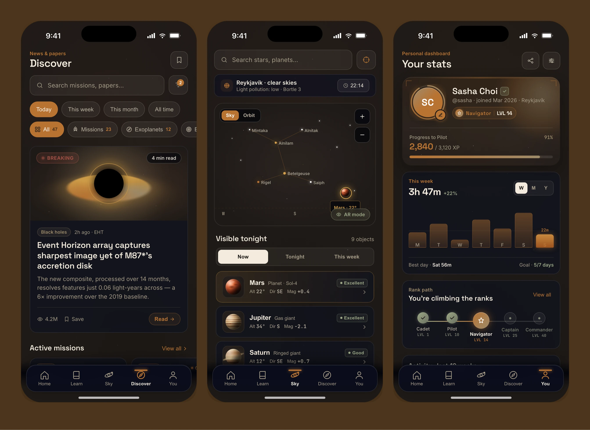
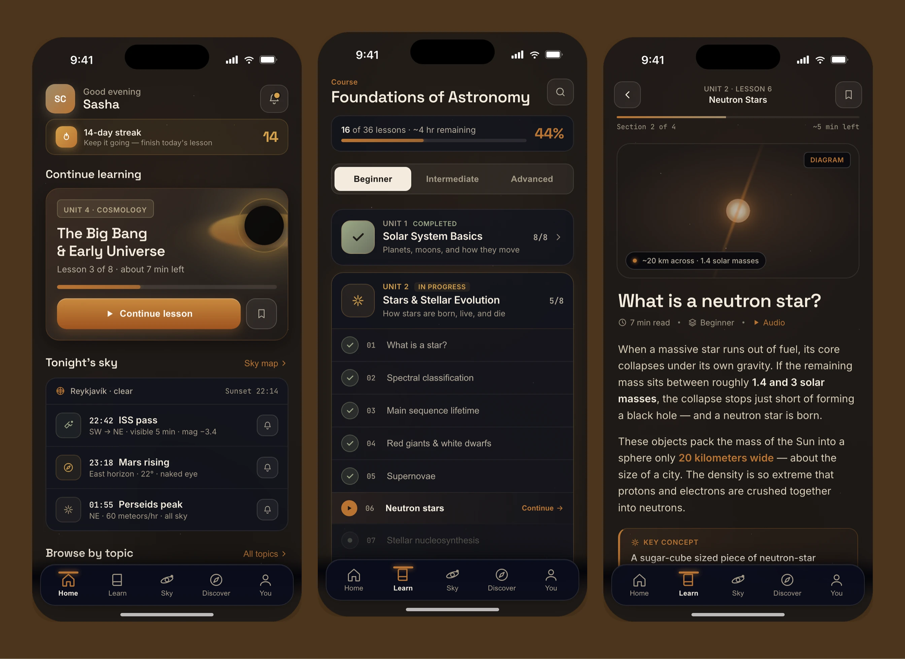
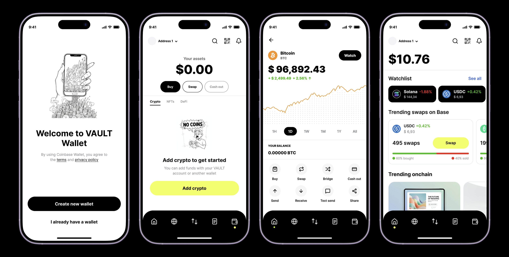
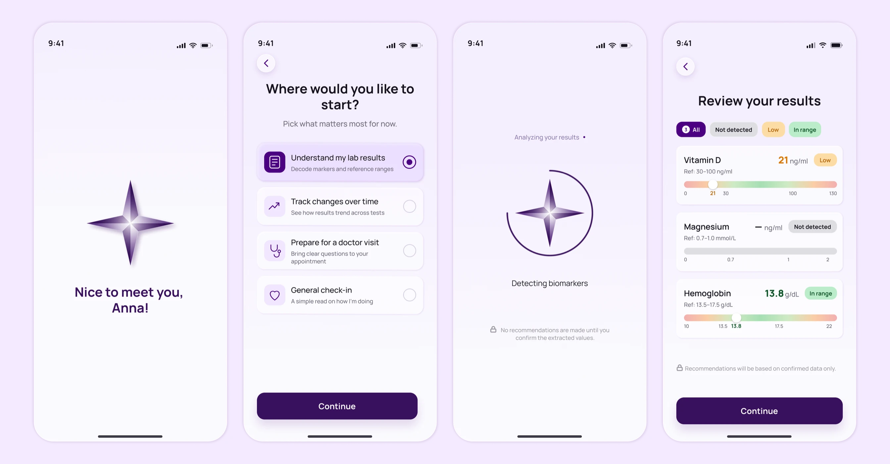

Aether
The concept focuses not just on a set of educational screens but on an atmospheric product world; the app helps explore space through lessons, night-sky observations, a sky map and personal progress.

Product Designer with 3+ years of experience across B2B, B2C, SaaS, data-heavy products and design systems
I help the product grow and make complex flows clear and enjoyable, so people reach their goal faster and the team reaches results.
I use AI to quickly build a working clickable prototype and test an idea live, validate hypotheses and optimize processes.
 CoPilot: security reports
A workspace for AppSec analysts who review scan reports and make decisions on vulnerabilities. I designed a split-screen workspace where the report list, evidence, recommendations and actions stay in one context.
CoPilot: security reports
A workspace for AppSec analysts who review scan reports and make decisions on vulnerabilities. I designed a split-screen workspace where the report list, evidence, recommendations and actions stay in one context.

VAULT Wallet: crypto wallet A crypto wallet that doesn't scare newcomers off with the usual dark crypto aesthetic. I designed a calm interface in an Asian visual language: onboarding, wallet import, buying and the watchlist all stay simple and clear. Track: security dashboard
A customizable security dashboard for an enterprise AppSec platform. I designed a widget-based workspace: each role quickly assembles its own overview and drills into details without losing the big picture.
Track: security dashboard
A customizable security dashboard for an enterprise AppSec platform. I designed a widget-based workspace: each role quickly assembles its own overview and drills into details without losing the big picture.
 Design System: component library
A component library for a company with many products that need to stay consistent while still shipping fast. I described the core components as a system: variants, states, sizes and usage rules, ready for handoff.
Design System: component library
A component library for a company with many products that need to stay consistent while still shipping fast. I described the core components as a system: variants, states, sizes and usage rules, ready for handoff.
 Wave: triaging scan results
An AI module for triaging vulnerabilities after a scan, where the team got hundreds of findings and spent hours on manual review. I designed a flow where AI shows the check status, probability, explanation and path to code, while the final decision stays with the analyst.
Wave: triaging scan results
An AI module for triaging vulnerabilities after a scan, where the team got hundreds of findings and spent hours on manual review. I designed a flow where AI shows the check status, probability, explanation and path to code, while the final decision stays with the analyst.

Alwa MVP: lab results and health profile An MVP of a health app that helps users make sense of their lab results, add personal context and get a clear next step.
The concept focuses not just on a set of educational screens but on an atmospheric product world; the app helps explore space through lessons, night-sky observations, a sky map and personal progress.


A concept for a fintech app with an AI assistant for managing personal finances. It brings together accounts, expenses, transfers, investments and personal recommendations, helping users understand their budget, plan spending and make financial decisions.